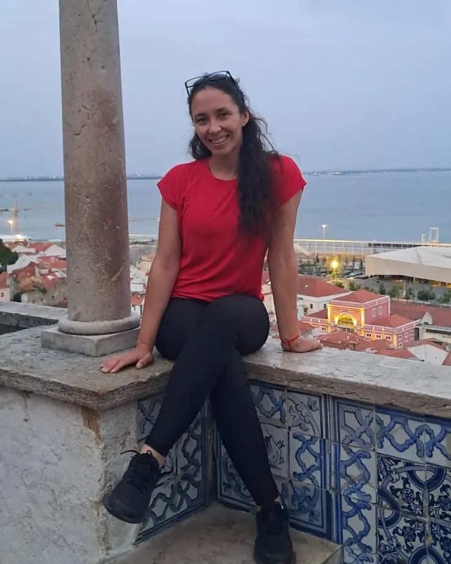

Arquitectura, gestión y acompañamiento técnico
Arquitectura pensada para tu forma de vivir.
¿Necesitás documentar una construcción existente o desarrollar un proyecto arquitectónico? Realizo relevamientos, planos y documentación municipal, además de proyectos adaptados a cada caso.
Atención profesional en Anisacate y localidades cercanas.


Soy Nadia, arquitecta.
- Matrícula
- M.P. 13396
- Formación
- FAUD · Universidad Nacional de Córdoba
- Trayectoria
- Más de 15 años
- Zona
- Anisacate y localidades cercanas
Soy arquitecta, egresada de la Facultad de Arquitectura, Urbanismo y Diseño de la Universidad Nacional de Córdoba, y cuento con más de 15 años de trayectoria profesional en el desarrollo de proyectos, ampliaciones y remodelaciones.
Conocer más sobre mí →Reseñas
Ver más reseñas en Google ↗-
Puedo recomendar 100% a la Arq. Nadia Banegas con quién construimos mi casa.
Más allá de la excelencia profesional que es de destacar, el compromiso, la confianza y el humanismo con el que me acompañó fueron fundamentales.
Es mi primer y única vivienda por lo cual había apostado todo en este proyecto que se concretó con creces. Gracias Nadia!!!! Que sigan los éxitos.
-
Contratamos a Nadia para realizar los planos de nuestro complejo de cabañas y nos acompañó con la obra hasta el final. Como profesional nos parecio excelente, responsable, cumple lo que dice, siempre con una actitud positiva y resolutiva. Como persona, destaco su calidez humana, su manera de escuchar y acompañar hizo el proceso mas sencillo. La volvería a contratar sin dudar y la recomiendo 100%. Quedamos felices y agradecidos por su trabajo con nosotros. !!
-
Excelente profesional y magnífica persona, supo enseguida plasmar nuestros requerimientos en una carpeta con diseños que quedamos enamorados, recomendable 100 %
-
Excelente profesional, en todo momento nos asesoró, muy comprometida con su servicio, nos queda la mejor de las experiencias y por supuesto siempre la vamos a recomendar, millones de gracias!!
-
Muy recomendable, la arquitecta Nadia Banegas realizó el plano de nuestro casa y estamos muy agradecidos, ya que presentó compromiso y coordinación en cada detalle.


¿Necesitás asesoramiento?
Escribime y te indicaré cuál es el servicio adecuado para tu caso. Atención profesional en Anisacate y localidades cercanas.
Escribir por WhatsApp- +54 9 3547 66-2066
- Correo electrónico
- nadiabbanegas@gmail.com
- Zona de atención
- Anisacate y localidades cercanas, Córdoba